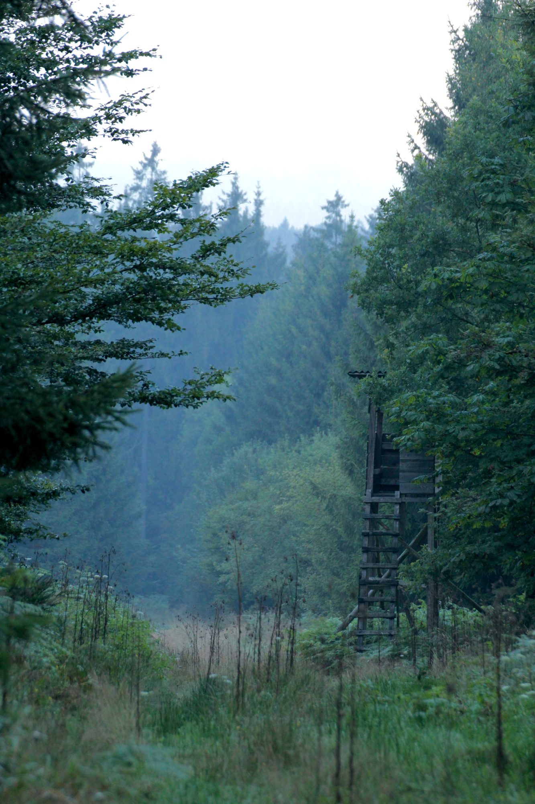
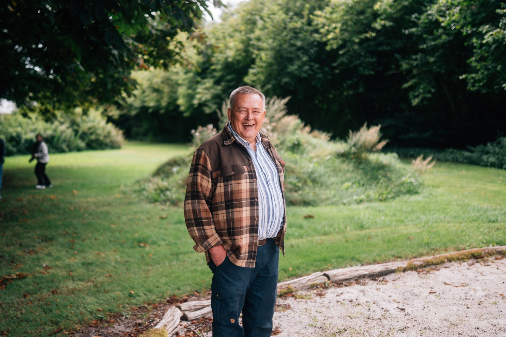
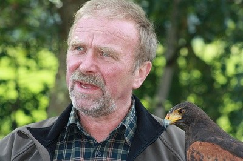

Wildbiologie statt Auswendiglernen
Wer Tiere versteht, jagt besser — und verantwortungsvoller. Deshalb sind Wildbiologie, Verhalten und Ökologie bei uns keine Prüfungsfächer, sondern das Fundament jeder Stunde.
Acht Monate. Zwei erfahrene Ausbilder. Ein Kursabend pro Woche in Heerde, Schießausbildung in Sulingen. Am Ende steht das Grüne Abitur — und das Rüstzeug für ein Leben draußen.
Wer Tiere versteht, jagt besser — und verantwortungsvoller. Deshalb sind Wildbiologie, Verhalten und Ökologie bei uns keine Prüfungsfächer, sondern das Fundament jeder Stunde.
Auf dem Schießstand des Jagdschützenclubs Sulingen trainieren Sie mit echten Jagdwaffen, unter Anleitung. Sicherheit, Treffsicherheit, Pflege — bis jeder Handgriff sitzt.
Zwei Ausbilder, ein überschaubarer Kreis, ein fester wöchentlicher Abend. Wir lernen Sie als Menschen kennen, nicht als Prüflinge — und darauf bauen wir.
Der Kurs führt Sie vom ersten Kursabend im August bis zur staatlichen Jägerprüfung im Mai. Theorie in Heerde, Schießausbildung in Sulingen — ergänzt durch Reviergänge, Wildbestimmung und die Begleitung durch erfahrene Jäger.
Wir halten den Kreis bewusst klein. Das bedeutet: ehrliche Fragen, direkte Antworten und genug Zeit, damit jeder wirklich versteht, was im Wald, im Revier und am Gewehr geschieht. Auch Interessierte mit Wohnsitz außerhalb des Landkreises Diepholz sind herzlich willkommen.

Die Jägerprüfung ist in Niedersachsen durch die Jägerprüfungsordnung in fünf Fachgebiete gegliedert — wie wir sie vermitteln, ist unsere Sache. Bei uns ergeben sie ein Bild, nicht einen Stapel Karteikarten.
Dem Jagdrecht unterliegende und andere frei lebende Tiere — Wildbiologie, Lebensweise, Verhalten und Ökologie der heimischen Arten.
Aufbau, Handhabung, Pflege und Recht — vom Flintenkorn bis zur Büchse, einschließlich Fanggeräte und Munitionskunde.
Biotopgestaltung, Artenschutz und die Praxis des Waidwerks im Jahreslauf — Ansitz, Pirsch, Drück- und Erntejagd.
Behandlung des erlegten Wildes, Wildbrethygiene und Wildkrankheiten; Jagdhundewesen; Jägersprache, Signale und jagdliches Brauchtum.
Bundesjagdgesetz, Niedersächsisches Landesjagdgesetz, Waffenrecht und Tierschutz — das rechtliche Fundament des Waidwerks.
Neben den Kursabenden gehören Reviergänge, gemeinsame Ansitze und die Begleitung erfahrener Jäger zum Programm. Erst dort setzt sich zusammen, was in Theorie und auf dem Schießstand trainiert wurde.

Ausbilder · Mitinhaber
Langjähriger Inhaber der Sport- und Jagdwaffen GmbH Sulingen und erfolgreicher Jagdschütze. Seine Erfahrung in Waffenkunde, Munition und Schießausbildung bringt er in jeden Kursabend ein — praxisnah und aus erster Hand. Darüber hinaus ist er Fachmann für das Zusammenstellen einer Waffe, die zum Schützen passt.

Ausbilder · Mitinhaber
Vorsitzender des Jagdgebrauchshundvereins Diepholz und Hundeobmann der Jägerschaft Diepholz. Mit seinem eigenen Zwinger „vom Rauhen Busch" züchtet er Magyar Vizsla (Ungarische Vorstehhunde) und ist VDH-Spezialzuchtrichter für die Rasse. Er leitet die Hundeführerausbildung von der Welpengruppe bis zur Brauchbarkeitsprüfung — wer einen Jagdhund führen, ausbilden oder passend auswählen will, ist bei Heiner richtig. Mit Geduld, Ernst und Humor.
Der klassische Jahresgang: Start Ende August 2026, Abschluss mit der staatlichen Jägerprüfung im Mai 2027. Acht Monate, in denen aus Interessierten Jäger werden.
Begleitender Lehrgang für Jäger mit Hund: Grundlagen der Führung, Einsatz im Revier, Prüfungsvorbereitung. Termine auf Anfrage.
Das gesetzlich vorgeschriebene Mindestalter beträgt 15 Jahre bei Kursbeginn. Damit ist der Kurs auch für Schülerinnen und Schüler offen, die sich frühzeitig mit Wild und Natur beschäftigen möchten.
Nein. Wir starten bei null. Für die Schießausbildung stellen wir Waffen und Munition. Sie brauchen nichts mitzubringen außer Zeit, Konzentration und ernsthaftes Interesse an Natur und Jagd.
Die theoretischen Kursabende finden in unserem Seminarraum in Heerde (Gemeinde Kirchdorf, Landkreis Diepholz) statt. Die Schießausbildung absolvieren Sie auf dem Schießstand des Jagdschützenclubs Diepholz e.V. in Sulingen.
Ja. Der Kurs steht ausdrücklich auch Interessierten mit Wohnsitz außerhalb des Landkreises Diepholz offen. Viele unserer Jungjäger kommen aus der weiteren Umgebung — Diepholz liegt verkehrsgünstig zwischen Bremen, Osnabrück und Minden.
Die Prüfung vor der unteren Jagdbehörde besteht aus drei Teilen: einer schriftlichen Prüfung (Multiple-Choice über alle Sachgebiete), einer praktischen Schießprüfung (Büchse und Flinte) und einer mündlichen Prüfung. Wir bereiten Sie auf alle drei Teile gezielt und getrennt vor.
Die Kursgebühr teilen wir Ihnen gerne telefonisch oder per Mail mit — sie hängt davon ab, welche Leistungen Sie nutzen (z. B. Hundeführerlehrgang zusätzlich). Prüfungsgebühren der unteren Jagdbehörde sind separat.
Oder schreiben Sie uns ein paar Zeilen — wir melden uns zeitnah zurück, klären offene Fragen und halten Ihren Platz im nächsten Kurs vorsorglich frei.